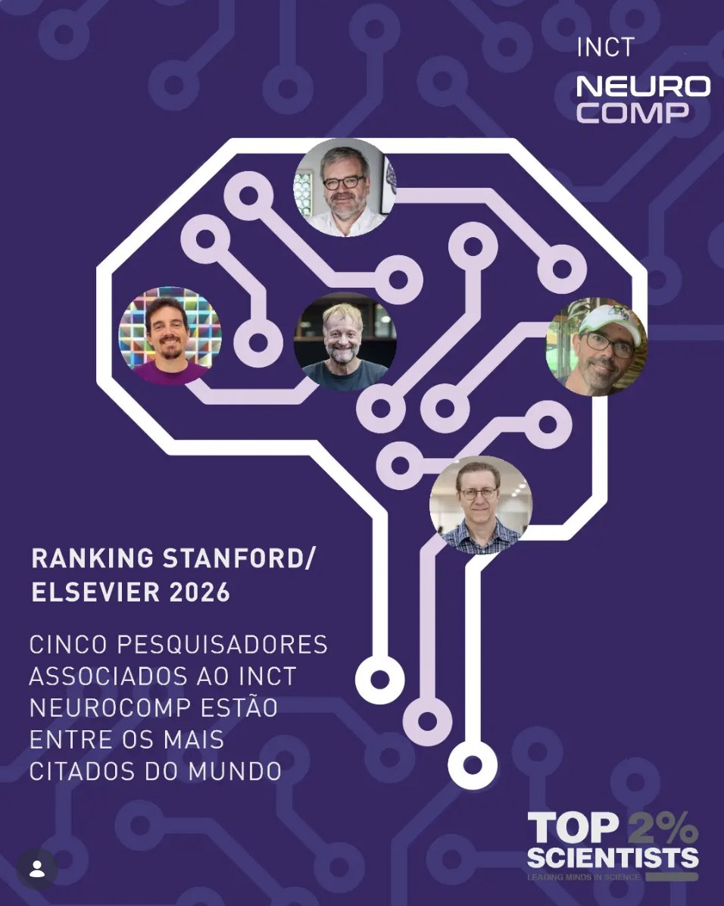

Among the World’s Most Cited Scientists
Stanford/Elsevier Top 2% Scientists ranking 2026
The Stanford/Elsevier ranking is an annual classification that analyzes the Scopus database to identify the most cited scientists in the world.
In the 2026 list, released last month, five researchers from INCT NeuroComp were included among the most influential scientists: Adriano Tort, Hans Herrmann, Nuno de Sousa, Luiz Eduardo Soares de Oliveira and Francisco Rodrigues. This result makes INCT NeuroComp very proud, as it recognizes the excellent work carried out by our researchers.
